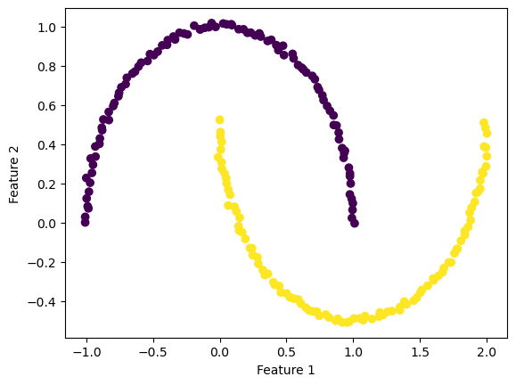
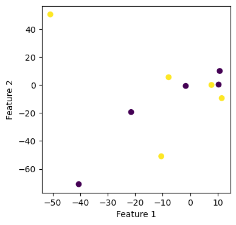
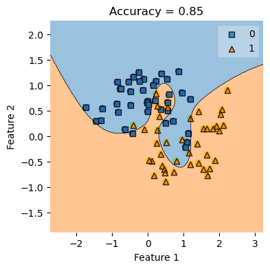
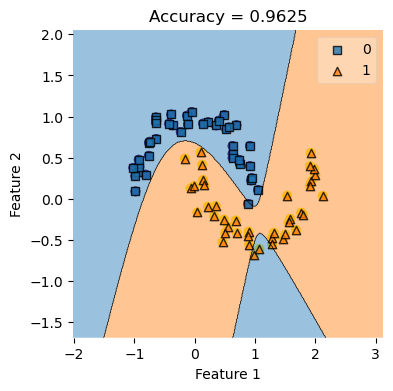

%load_ext autoreload
%autoreload 2The autoreload extension is already loaded. To reload it, use:
%reload_ext autoreloadHere is a link to the source code for this Kernel Logistic Regression blog post.
Here is a link to the main reference we are using when creating this blog post.
In this blog post I am going to discuss kernel logistic regression for binary classification.
Recall the empirical risk minimization problem, which is finding the weight vector w that minimize the loss function \(L(w)\). #### \[ \hat{w} = \arg \min_{w} L(w), \] where the loss function \(L(w)\) is of the following form: #### \[ L(w) = \frac{1}{n} \sum_{i=1}{n} \ell( \langle w, x_i \rangle, y_i ), \] and $(, y ) $ is the logistic loss from the previous blog post. However, previously, we only studied linear decision boundaries, and now we want to study nonlinear patterns.
%load_ext autoreload
%autoreload 2The autoreload extension is already loaded. To reload it, use:
%reload_ext autoreloadFirst, let’s import some libraries, and let’s create an artificial data set that has nonlinear patterns.
# from sklearn.datasets import make_blobs
from sklearn.datasets import make_moons, make_circles
from matplotlib import pyplot as plt
plt.rcParams["figure.figsize"] = (4,4)
import numpy as np
np.random.seed(42)
from sklearn.linear_model import LogisticRegression
from mlxtend.plotting import plot_decision_regions
np.seterr(all="ignore"){'divide': 'ignore', 'over': 'ignore', 'under': 'ignore', 'invalid': 'ignore'}How to deal with the nonlinear pattern we see here? it seems a linear separator like a straight line will not do a satisfactory job here. Hence, we introduce the kernel logistic regression, which we are going to implement now.
X, y = make_moons(200, shuffle = True, noise = 0.1)
plt.scatter(X[:,0], X[:,1], c = y)
labels = plt.gca().set(xlabel = "Feature 1", ylabel = "Feature 2")
# LR = LogisticRegression()
# LR.fit(X, y)
# plot_decision_regions(X, y, clf = LR)
# title = plt.gca().set(title = f"Accuracy = {(LR.predict(X) == y).mean()}",
# xlabel = "Feature 1",
# ylabel = "Feature 2")
To start us off, we manually create a tiny data set, and we call the fit function that we implemented in the source code (link at the start of the blog). This will help us to see clearly where our implementation works or not, and using a tiny test data set also helps for debugging purposes.
XX = np.array([
[-50.84739307, 50.71154296],
[ 11.46814927, -9.28580296],
[ -40.5192833, -70.94984582],
[ 10.73327397, 10.17310931],
[ 10.33197143, 0.43375035],
[ -1.62726102, -0.54736954],
[-7.84739307, 5.71154296],
[ -21.46814927, -19.28580296],
[ -10.5192833, -50.94984582],
[ 7.73327397, 0.17310931],
])
yy = np.array([1, 1, 0, 0, 0, 0, 1, 0, 1, 1])
print(yy)
plt.scatter(XX[:,0], XX[:,1], c = yy)
labels = plt.gca().set(xlabel = "Feature 1", ylabel = "Feature 2")[1 1 0 0 0 0 1 0 1 1]
It seems that those \(10\) data points does not display a linear pattern, which is what we want. Now we create an instance of the KLR class and test our fit function to see if it could classify according to nonlinear patterns.
from sklearn.metrics.pairwise import rbf_kernel
from kernel_logistic import KLR
KLR = KLR(rbf_kernel )
KLR.fit(XX, yy)print(XX)[[-50.84739307 50.71154296]
[ 11.46814927 -9.28580296]
[-40.5192833 -70.94984582]
[ 10.73327397 10.17310931]
[ 10.33197143 0.43375035]
[ -1.62726102 -0.54736954]
[ -7.84739307 5.71154296]
[-21.46814927 -19.28580296]
[-10.5192833 -50.94984582]
[ 7.73327397 0.17310931]]plot_decision_regions(XX, yy, clf = KLR)
mypredict = KLR.predict(XX)
title = plt.gca().set(title = f"Accuracy = {(mypredict == yy).mean()}",
xlabel = "Feature 1",
ylabel = "Feature 2")
print(KLR.predict(XX))
print(yy)[1 1 0 0 0 0 1 0 1 1]
[1 1 0 0 0 0 1 0 1 1]
np.random.seed(42)
np.seterr(all="ignore")
from sklearn.linear_model import LogisticRegression
from mlxtend.plotting import plot_decision_regions
X, y = make_moons(80, shuffle = True, noise = 0.3)
plt.scatter(X[:,0], X[:,1], c = y)
labels = plt.gca().set(xlabel = "Feature 1", ylabel = "Feature 2")
KLR.fit(X, y)
plot_decision_regions(X, y, clf = KLR)
yourpredict = KLR.predict(X)
title = plt.gca().set(title = f"Accuracy = {(yourpredict == y).mean()}",
xlabel = "Feature 1",
ylabel = "Feature 2")
print(KLR.predict(X))
print("OMG")
print(y)[0 0 0 0 0 0 1 1 0 0 1 0 1 1 1 1 1 1 1 1 0 1 0 1 0 1 0 1 0 1 1 1 0 1 1 0 1
0 0 1 1 0 0 0 1 1 0 1 1 1 1 1 0 0 1 0 1 0 1 1 1 1 0 1 0 1 1 0 0 1 1 0 0 0
1 0 1 1 0 0]
OMG
[0 0 0 0 0 0 0 1 0 0 1 0 1 0 1 1 1 1 1 1 0 1 0 1 0 1 1 1 0 0 1 1 0 1 1 0 1
0 1 0 1 0 0 0 0 1 0 0 1 1 1 1 0 0 1 0 1 0 1 1 1 0 0 1 1 1 1 0 0 0 1 0 0 0
1 0 1 1 0 1]
print(KLR.v)[ -622.23496279 1335.13521946 681.20950851 -1284.34485486
-525.72085209 333.19420805]
X, y = make_moons(80, shuffle = True, noise = 0.1)
plt.scatter(X[:,0], X[:,1], c = y)
labels = plt.gca().set(xlabel = "Feature 1", ylabel = "Feature 2")
KLR.fit(X, y)
# plot the graph
plt.scatter(X[:,0], X[:,1], c = y)
labels = plt.gca().set(xlabel = "Feature 1", ylabel = "Feature 2")
plot_decision_regions(X, y, clf = KLR)
yourpredict = KLR.predict(X)
title = plt.gca().set(title = f"Accuracy = {(yourpredict == y).mean()}",
xlabel = "Feature 1",
ylabel = "Feature 2")
print(KLR.predict(X))
print("OMG")
print(y)[0 0 1 1 1 0 1 0 1 1 1 0 0 1 0 1 1 1 1 0 0 1 0 1 0 1 1 0 1 0 0 1 0 0 1 1 1
1 1 1 1 0 0 1 1 0 0 1 0 0 1 0 1 0 0 0 0 0 1 0 1 1 1 0 1 0 0 0 0 0 1 0 1 0
1 0 0 1 0 0]
OMG
[0 0 1 1 1 0 1 0 1 1 1 0 0 1 0 1 1 1 1 0 0 1 0 1 0 1 1 0 1 0 0 1 0 1 1 1 1
0 1 1 1 0 0 1 1 0 1 1 0 0 1 0 1 0 0 0 0 0 1 0 1 1 1 0 1 0 0 0 0 0 1 0 1 0
1 0 0 1 0 0]